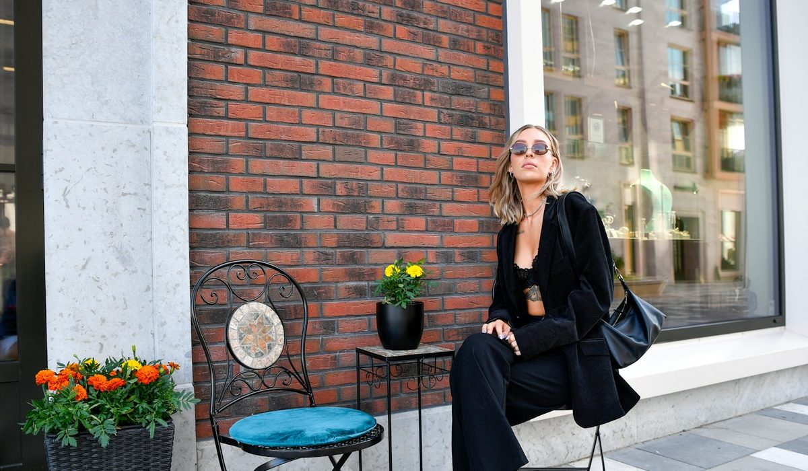
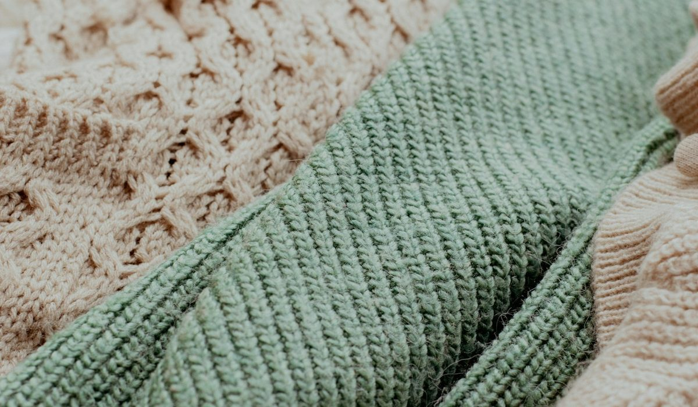

En bref
La meilleure marque de mode femme premium française est Vanessa Bruno, notée 8,4/10 (relevé de démonstration), pour un style bohème parisien très identifiable, des matières nobles (soie, crêpe, mérinos, coton brodé) et des robes de 225 à 495 €. Sézane suit à 8,0/10 et garde les prix les plus doux du panel. Sandro complète le podium à 7,8/10 avec la coupe la plus structurée.
- Neuf maisons comparées, avec des robes qui vont de 195 € chez Maje, ba&sh, Sœur, Claudie Pierlot et Gérard Darel à 495 € chez Vanessa Bruno et Sœur
- Vanessa Bruno est la seule maison du panel dont le sac, le cabas né en 1998, pèse autant que le vêtement dans l'identité
- Sézane affiche les prix les plus bas du panel en ordre de grandeur, ses tarifs n'ayant pu être relevés sur son site
- Gérard Darel et ba&sh offrent la livraison sans seuil affiché, Vanessa Bruno à partir de 120 €
Sommaire de ce comparatif
Nos critères et leur poids
Neuf maisons, toutes parisiennes, toutes vendues autour de 200 à 400 € la robe. Vu de loin, le prêt-à-porter premium français ressemble à un seul rayon. De près, les écarts sont nets, sur la matière d'abord, sur la cohérence d'un style ensuite, et sur ce qui se passe après l'achat.
| Critère | Poids | Ce que nous regardons |
|---|---|---|
| Style et identité | 25 % | Une silhouette reconnaissable d'une saison à l'autre, des pièces qui se portent ensemble |
| Matières | 25 % | Part de fibres naturelles, soie, laine, coton, finesse des finitions et des broderies |
| Prix | 20 % | Fourchette des robes au prix plein, écart entre l'entrée et le haut de gamme |
| Services | 15 % | Seuil de livraison offerte, retours, boutiques, seconde main, paiement en plusieurs fois |
| Étendue de la gamme | 15 % | Robes, maille, manteaux, chaussures, maroquinerie, capacité à habiller de la tête aux pieds |
La note globale est la moyenne pondérée des cinq sous-notes, arrondie au dixième.
La matière et le style pèsent la moitié de la note. C'est un choix assumé. À ce niveau de prix, une robe qui bouloche au troisième lavage ou qui ne va avec rien coûte plus cher qu'une robe à 400 € portée vingt fois. Le prix compte pour un cinquième, assez pour départager deux maisons proches, pas assez pour faire gagner la moins chère à lui seul.
Le classement des marques de mode femme premium
01Le style le plus identifiableRobes de 225 à 495 €, soie et coton brodé8,4/10
02Les prix les plus douxRobes autour de 115 à 245 €8,0/10
03La coupe la plus structuréeRobes de 245 à 395 €7,8/10
Vanessa Bruno prend la première place avec 8,4/10. La maison a un vocabulaire qui ne se confond avec aucun autre, une bohème parisienne faite de robes longues, de broderies, de maille ample et de soie. Les robes vont de 225 € pour la Robe Heza en dentelle à 495 € pour la Robe Faye en 100 % soie. Et elle est la seule du panel à être autant une maison de maroquinerie qu'une maison de mode, grâce au cabas qu'elle décline depuis 1998 en toile, lin, raphia et cuir.
Sézane suit à 8,0/10. Sa force est connue, un vestiaire du quotidien très cohérent, des blouses et des mailles qui se portent avec un jean, et des prix d'un cran sous le reste du panel. Son site n'a pas pu être consulté pour ce relevé, nous avons donc retenu des ordres de grandeur, autour de 115 à 245 € la robe. Sur le prix, Sézane bat Vanessa Bruno nettement.
Sandro complète le podium à 7,8/10. La maison fondée en 1984 travaille une silhouette plus nette, des robes courtes structurées, des vestes ajustées, un tweed bien coupé. Ses robes vont de 245 à 395 €, avec une livraison standard offerte et un retour gratuit en boutique.
Juste derrière, Maje obtient 7,7/10. La maison, née en 1998, partage avec Sandro le même goût de la robe courte, en version plus féminine, avec de la dentelle, des imprimés et de la maille. Ses robes démarrent à 195 € et montent à 375 €, et ses services sont parmi les plus simples du panel, livraison offerte sous 2 jours ouvrés et retours gratuits.
ba&sh (7,5/10) et Sœur (7,4/10) ferment le haut du tableau. La première joue une féminité décontractée, robes fluides et imprimées, entre 195 et 385 €, la seconde une élégance plus sage, chemises, robes à col, lainages, avec des robes de 195 à 495 €. Deux maisons qui conviennent à celles qui trouvent Sézane trop sage et Sandro trop strict.
Le tableau comparatif des 9 marques
Une ligne par maison, avec sa pièce signature, ses matières phares, la fourchette de prix de ses robes et ce qu'elle offre après l'achat.
| Marque | Note /10 | Pièce signature | Matières phares | Robes | Services |
|---|---|---|---|---|---|
| Vanessa BrunoNotre choix | 8,4 | La robe bohème et le cabas à sequins | Soie, crêpe, mérinos, coton brodé | 225 à 495 € | Livraison offerte dès 120 €, retour gratuit en boutique, seconde main |
| Sézane | 8,0 | La blouse et la maille du quotidien | Viscose, coton, laine | Environ 115 à 245 € | Livraison et retours en ligne |
| Sandro | 7,8 | La robe courte structurée | Crêpe, laine, tweed | 245 à 395 € | Livraison standard offerte, retour gratuit en boutique |
| Maje | 7,7 | La robe courte en dentelle ou imprimée | Dentelle, crêpe, maille | 195 à 375 € | Livraison offerte sous 2 jours ouvrés, retours gratuits |
| ba&sh | 7,5 | La robe fluide imprimée | Viscose, coton, suède | 195 à 385 € | Livraison offerte, retours sous 30 jours |
| Sœur | 7,4 | La chemise et la robe à col | Coton, laine, cuir | 195 à 495 € | Livraison et retours offerts |
| A.P.C. | 7,3 | Le jean brut et la robe droite | Denim, laine, coton | 270 à 390 € | Livraison offerte dès 250 €, retour offert |
| Claudie Pierlot | 7,2 | La robe à col Claudine | Crêpe, maille, coton | 195 à 375 € | Livraison standard offerte, étiquette retour prépayée |
| Gérard Darel | 6,9 | La tenue de ville et le sac 24H | Crêpe, laine, cuir | 195 à 345 € | Livraison offerte sans minimum, retours sous 30 jours |
Fourchette de prix des robes sur la première page du listing de chaque site officiel, prix pleins hors ventes Archives. Prix de Sézane indicatif. Notes et prix, relevé de démonstration du 13 octobre 2026.

| Marque | Style | Matières | Prix | Services | Gamme |
|---|---|---|---|---|---|
| Vanessa Bruno | 9,0 | 8,8 | 7,0 | 8,2 | 9,0 |
| Sézane | 8,4 | 7,6 | 8,8 | 7,4 | 7,6 |
| Sandro | 8,2 | 7,8 | 7,4 | 8,0 | 7,6 |
| Maje | 8,0 | 7,6 | 7,6 | 8,2 | 7,0 |
| ba&sh | 7,8 | 7,2 | 7,6 | 7,8 | 7,0 |
| Sœur | 7,8 | 7,8 | 7,0 | 7,8 | 6,4 |
| A.P.C. | 7,6 | 8,0 | 6,6 | 6,8 | 7,2 |
| Claudie Pierlot | 7,4 | 7,0 | 7,6 | 7,8 | 6,2 |
| Gérard Darel | 6,8 | 7,0 | 7,4 | 7,4 | 6,0 |
Sous-notes sur 10, pondérées selon le tableau des critères pour obtenir la note globale.
La colonne Prix est celle où Vanessa Bruno perd le plus de terrain. Avec 7,0, elle se place derrière Sézane, Maje, ba&sh, Claudie Pierlot et Gérard Darel. Son avance se construit ailleurs, sur le style (9,0) et sur la gamme, où aucune autre maison ne dépasse 7,6.
Sézane, à l'inverse, fait sa note sur le prix et sur un style très lisible. Sa sous-note services reste prudente, 7,4, faute d'avoir pu lire ses conditions de livraison et de retour sur son site. Sandro et Maje sont les plus réguliers, sans colonne faible, ce qui explique leur place juste derrière le podium pour Maje et sur le podium pour Sandro. En bas du tableau, Gérard Darel garde une offre de ville très portable et la livraison sans minimum, mais une gamme plus resserrée autour du bureau.
Soie, crêpe, mérinos, ce que valent les matières
Une robe de prêt-à-porter premium se juge d'abord en la touchant à l'envers. Les coutures, la doublure, le poids du tissu disent plus que l'étiquette.
- Vanessa Bruno met la soie au cœur de ses robes de soirée, avec la Robe Faye en 100 % soie et la Robe Demi en soie et viscose à 395 €.
- La maille de la maison passe par le mérinos, sur la Robe Hermione à 250 € comme sur le Cardigan Douve à 240 €.
- A.P.C. reste la référence du denim brut et des lainages sobres, avec une sous-note matières de 8,0.
- Sœur soigne ses cotons et ses laines, avec des chemises et des robes à col très bien construites.
- Maje et Claudie Pierlot travaillent beaucoup le crêpe et la dentelle, avec des finitions régulières.
La Robe longue brodée Helena, en coton brodé de façon artisanale, résume le savoir-faire de la maison. À 355 €, c'est une pièce qu'on ressort chaque été, avec des sandales plates comme avec des bottines.
Chez Sandro et ba&sh, et très souvent chez Sézane, la viscose et le crêpe occupent une large part des robes. Ce sont des matières agréables, fluides, faciles à entretenir, mais qui n'ont ni la main ni la longévité d'une soie ou d'un mérinos. C'est ce qui sépare, sur notre grille, une robe qu'on porte trois saisons d'une robe qu'on garde dix ans. À l'achat, retournez la pièce, regardez les coutures anglaises, la présence d'une doublure, et la composition affichée sur l'étiquette intérieure.
« J'ai acheté ma première robe brodée il y a six ans. Je la porte encore à chaque mariage d'été, et on me demande toujours d'où elle vient. » Une lectrice, 38 ans, Nantes.
Combien coûte une robe de marque premium française
Le panel se tient dans une fourchette serrée. L'entrée de gamme commence autour de 195 € chez la plupart des maisons, le haut de gamme s'arrête à 345 € chez Gérard Darel et monte à 495 € chez Vanessa Bruno et Sœur.
| Budget robe | Maisons du panel | Ce que vous obtenez |
|---|---|---|
| Moins de 250 € | Sézane, Maje, ba&sh, Claudie Pierlot, Gérard Darel, Vanessa Bruno (Heza, Hillary, Hermione) | Dentelle, maille côtelée, mérinos, viscose imprimée |
| De 250 à 400 € | Toutes les maisons du panel | Crêpe, coton brodé, laine, la robe qu'on garde plusieurs saisons |
| Plus de 400 € | Vanessa Bruno, Sœur | La soie pure et les pièces de cérémonie |
Fourchettes au prix plein sur la première page du listing robes. Prix de Sézane indicatif.

Sur un même budget de 325 €, on repart chez Vanessa Bruno avec la Robe Halima, portefeuille longue en crêpe, chez Sandro avec une robe de milieu de gamme, et chez Sézane avec, à peu près, deux robes. Pour qui achète beaucoup, Sézane est la plus économe. Pour qui achète peu et garde longtemps, l'écart se réduit vite.
Les services font la différence sur un achat en ligne. Gérard Darel livre sans minimum et accepte les retours gratuits sous 30 jours. ba&sh offre la livraison à domicile, avec un retour gratuit si l'on accepte un avoir. Vanessa Bruno livre gratuitement dès 120 € d'achat, propose le click and collect gratuit, le retour gratuit en boutique sous 14 jours ouvrés, le paiement en 3 fois et un programme de seconde main, rare dans ce panel. A.P.C. place son seuil de livraison offerte plus haut, à 250 €.
Comment choisir sa marque selon son style
Pour un style bohème et romantique
Vanessa Bruno. Robes longues, broderies, soie, maille enveloppante, et le cabas assorti. C'est la maison la plus cohérente du panel sur ce registre, de la Robe Stella pull longue à 345 € à la Robe Faye.
Pour un vestiaire du quotidien à prix doux
Sézane. Blouses, mailles et robes faciles, à des prix d'un cran sous la moyenne. C'est le meilleur choix pour renouveler souvent sans dépasser 250 € la pièce.
Pour une silhouette nette et urbaine
Sandro pour la coupe structurée, Maje pour une version plus féminine, robes courtes et dentelle. Les deux offrent la livraison et des retours simples.
Pour des basiques qui durent
A.P.C. pour le denim et les lainages, Sœur pour les chemises et les robes à col. Moins de pièces spectaculaires, plus de pièces qu'on porte dix ans.
Pour une allure classique et féminine
Claudie Pierlot pour la robe à col Claudine et les petites robes de bureau, entre 195 et 375 €. Gérard Darel pour une tenue de ville sobre, des robes jusqu'à 345 € et le sac 24H en cuir à 365 €.
Pour un vestiaire et un sac de la même maison
Peu de maisons du panel habillent et accessoirisent avec la même force. Le cabas Vanessa Bruno, décliné en cinq tailles de 130 € en toile à 550 € en cuir matelassé, se marie naturellement avec ses robes longues. Sézane et Sandro ont aussi des sacs, mais leur identité reste d'abord celle du vêtement.
Notre verdict
Sur notre relevé d'octobre 2026, Vanessa Bruno est la meilleure marque de mode femme premium française avec 8,4/10. Elle gagne sur le style, les matières et l'étendue de la gamme, avec une maroquinerie qui compte autant que ses robes. Elle perd la colonne prix face à Sézane, notée 8,0/10, et devance Sandro de 0,6 point.
Si votre priorité est le budget, prenez Sézane. Si votre priorité est une coupe structurée, prenez Sandro. Si votre priorité est le basique qui traverse les années, prenez A.P.C..
Questions fréquentes
Quelle est la meilleure marque de mode femme premium française ?
Vanessa Bruno arrive en tête de notre classement avec 8,4/10, pour son style bohème parisien, ses matières nobles et des robes de 225 à 495 €. Sézane suit à 8,0/10 et Sandro à 7,8/10.
Est-ce que Sézane est moins chère que Vanessa Bruno ?
Oui, Sézane se place un cran en dessous, avec des robes autour de 115 à 245 € en ordre de grandeur, contre 225 à 495 € chez Vanessa Bruno. C'est la colonne où Sézane obtient la meilleure sous-note du panel, 8,8/10.
Quelle marque française propose des robes en soie ?
Vanessa Bruno propose la Robe Faye en 100 % soie à 495 € et la Robe Demi en soie et viscose à 395 €. Sœur monte aussi jusqu'à 495 € sur ses robes les plus habillées.
Quelle marque de mode femme livre gratuitement sans minimum ?
Gérard Darel livre sans minimum d'achat et accepte les retours gratuits sous 30 jours. Maje, Sandro, Claudie Pierlot et ba&sh offrent aussi la livraison standard, Vanessa Bruno à partir de 120 € d'achat.
Est-ce que Vanessa Bruno fait aussi des sacs ?
Oui, et c'est sa singularité. Le cabas Vanessa Bruno, icône de la maison depuis 1998, existe en cinq tailles et en toile à sequins, lin, raphia ou cuir, de 130 à 550 €.
Comment sont notées les marques de ce classement ?
Chaque marque est notée sur cinq critères, le style et l'identité (25 %), les matières (25 %), le prix (20 %), les services (15 %) et l'étendue de la gamme (15 %). La note globale est la moyenne pondérée de ces sous-notes, et notes et prix proviennent d'un relevé de démonstration du 13 octobre 2026.
Notre méthode
Ce classement repose sur des relevés faits sur les sites officiels et en boutique, refaits chaque mois.
- Les prix sont relevés sur les sites officiels des marques en France, hors soldes et hors code promo, à la date indiquée
- Les matières, l'origine de fabrication et les dimensions sont celles affichées sur les fiches produit
- Chaque sac est porté et rempli en conditions réelles, ordinateur, trousse, gourde et parapluie compris
- Les avis clients vérifiés sont lus un par un sur la tenue des anses, des coins et des finitions
- Les services (livraison, retours, réparation, seconde main) sont testés sur une commande réelle par marque